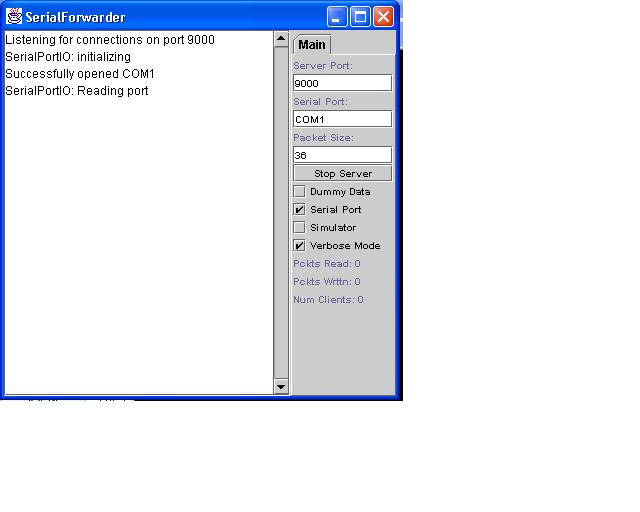
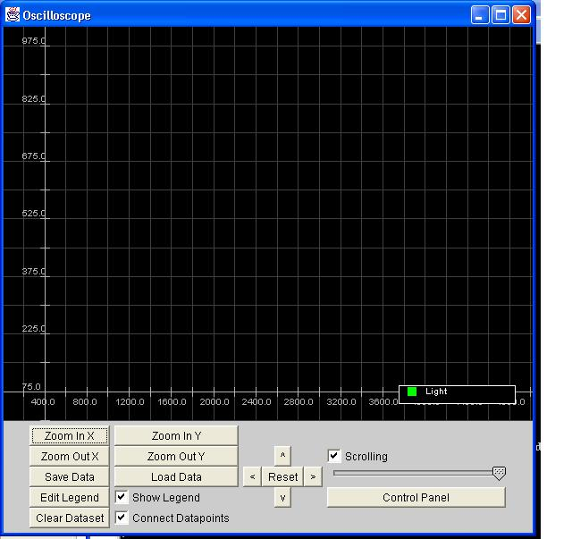
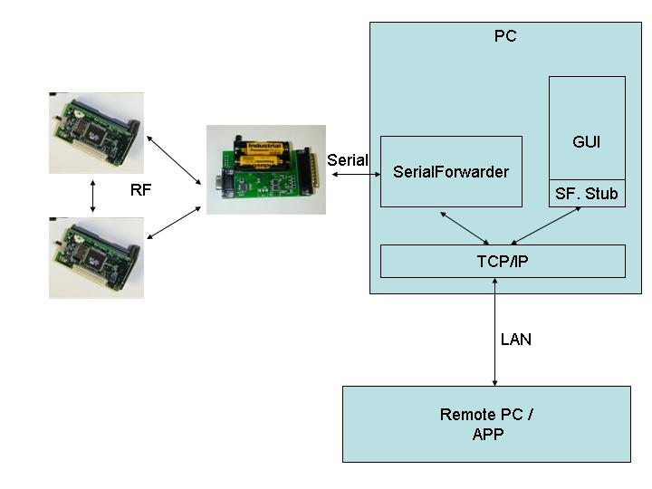

The goal of this application is to close the loop on communicating with the motes and bring the data onto a PC. First we'll introduce you to the tools that we have developed for communicating between a mote and a PC. We will then use these tools to display sensor reading that are coming from a mote onto the screen of a computer. The first stage of this will be to display the data coming from the mote in a text console. We will then extend this to demonstrate the display of this data on a graphical interface. Finally we will close the communication loop by demonstrating how to send data back to the motes.
The program to be run on the motes is apps/oscilloscope. The application consists of a single module that reads data from the ADC and sends out packets of the sensor reading of data channel 1 to the to the serial port. This application does not transmit the data over the radio. However, it would be simple to extend it to do so. It is intended to be used with the basic sensor board. Once the application is installed, each time the yellow LED blinks, a packet will be send to the serial port. Additionally, the RED led will be turned on when the sensor reading is greater that 0x20. In normal lighting, you should see the red led on. If you place the mote in darkness (very dark) then you should see the red led go off.
The first step to establishing communication between the PC and the mote is to connect up your serial port cable to the programming boards and to make sure that you have java and javax.comm installed. After programming your mote with the oscilloscope code, switch to the tools directory and run "make" then "java listen COM1" (assuming the mote is programmed into COM1).
cd nest/tools
java listen COM1
The expected output is:
listen started printing all ports... - COM3 - COM1 - LPT1 - LPT2 done. baud rate: 9600 data bits: 8 stop bits: 1 parity: 0 baud rate: 19200 data bits: 8 stop bits: 1 parity: 0 7E 00 0A 7D 01 00 72 EE 01 00 5D 03 5A 03 5A 03 59 03 53 03 4B 03 4B 03 58 03 61 03 61 03 00 00 00 00 76 9B 7E 00 0A 7D 01 00 7C EE 01 00 61 03 66 03 67 03 69 03 67 03 63 03 64 03 64 03 64 03 65 03 00 00 00 00 84 E0 7E 00 0A 7D 01 00 86 EE 01 00 65 03 66 03 65 03 65 03 64 03 65 03 66 03 65 03 66 03 66 03 00 00 00 00 10 97 7E 00 0A 7D 01 00 90 EE 01 00 66 03 66 03 66 03 66 03 66 03 66 03 66 03 66 03 66 03 66 03 00 00 00 00 CD 5E . . .
If you do not see the list of port that are available to javax.comm, then you have not correctly installed the javax.comm package. Please refer to the installation instructions that came with that code. If you do not see that data lines on your screen, then you may have chosen the wrong COM port or the mote may not be correctly connected to the computer. If this basic output program does not work, then it will not be possible to continue on.
The application that you are running is simply printing out the packets that are coming form the mote. Each data packet that comes out of the mote contains several fields of data. They include: the source ID, the reading number of the first reading, the ADC channel that the data is coming from and 10 sensor readings.
Here is the definition of the packet format as the code that places the data into the packet.....
This structure is mapped onto the data portion of the packet. This starts at byte 5 of the packet. Remember that bytes 1 and 2 are the destination address 0x007E here. Bytes 3 is the handler ID 0xA, and byte 4 is the group ID, 0x7D.
Here is the section of the mote code that is placing the data into the packet. Text in red is not actually in the OSCOPE.c file.
char TOS_EVENT(OSCOPE_CHANNEL1_DATA_EVENT) (short data) {
struct data_packet* pack = (struct data_packet*)(VAR(msg)[(int)VAR(curr)].data);
Type cast the data buffer to the packet type
printf("data_event\n");
pack->data[(int)VAR(state)] = data;
Add the new sensor reading to the packet.
VAR(state) ++;
Increment the counter that records the number
of bytes.
VAR(reading_number) ++;
if(VAR(state) == READINGS_PER_PACKET){
If the packet is full, then it is time to
send it out.
VAR(state) = 0;
Set the byte counter back to zero.
pack->channel = VAR(data_channel);
Record the channel that the data came from.
pack->last_reading_number =
VAR(reading_number); Put the
reading number into the packet.
pack->source_mote_id =
TOS_LOCAL_ADDRESS;
Put the source address into the packet.
if (TOS_CALL_COMMAND(OSCOPE_SUB_SEND_MSG)(TOS_UART_ADDR,0x1,&VAR(msg)[(int)VAR(curr)]))
{ Send the packet.
VAR(send_pending)++;
VAR(curr) ^=
0x1;
if(VAR(curr))TOS_CALL_COMMAND(OSCOPE_LEDy_on)();
else
TOS_CALL_COMMAND(OSCOPE_LEDy_off)();
return 1;
} else {
return 0;
}
}
if(data > 0x20)TOS_CALL_COMMAND(OSCOPE_LEDr_on)();
else TOS_CALL_COMMAND(OSCOPE_LEDr_off)();
return 1;
}
Listen is the most basic way of communicating with the mote. It is a program that directly opens the serial port and prints the data that it read out to the screen. While you will be able to clearly see a changing pattern in the data (try covering and uncovering the sensor), it is difficult to visualize the sensor readings.
Along with the mote code, we also provide a PC application designed to visualize the data coming from a mote. However to use the GUI, you have to switch over to using our SerialForwarder, a tool that abstracts away the serial port from an application.
To run the serial forwarder, remain in the tools directory and run "java net.tinyos.SerialForwarder.SerialForward" This will open up a GUI window and will also display text in the shell that started it. Check both locations to make sure that no errors occurred. Make sure that it states that the serial port was successfully opened. The window should look like...

As packets arrive from the mote connected to the serial port, you will see the "Pckts Read:" field in the lower right corner begin to increment.
It is now time to graphically display the data coming from the motes. In a new window, return to the tools directory and run: java net.tinyos.oscilloscope.oscilloscope. A graphical window will popup and begin displaying the data coming from your mote. This application is actually connecting to the serial forwarder, not directly to you serial port. This allows you to simultaneously run other applications that are communicating with a mote.
Note, power cycle the mote that is generating the data prior to starting the oscilloscope. If the mote has been running for a long time, the reading number may be quite large and you may not be able to see the data coming from mote on the screen. Power cycling the mote will restart the reading counter. Alternatively, you could used the scroll and zoom buttons to locate the data.

Here is the code that reads the data from the SerialForwarder
public void run() {
SerialForwarderStub r = new SerialForwarderStub("127.0.0.1",
9000);
try{
r.Open();
r.registerPacketListener(this);
r.Read();
}catch(Exception e){
e.printStackTrace();
}
}
The packet Listener interface that must be implemented is:
public interface PacketListenerIF extends
java.util.EventListener {
public void packetReceived(byte[] packet);
}
Here the r.Read() function call will never return. Instead it will block on waiting for packet to arrive. As the do, it will automatically call the "public void packetReceived(byte[] readings)" function with each packet.
As written, the oscilloscope program is setup to use the UART and the light sensor from the basic sensor board. Instead of using oscilloscope use oscilloscope_RF. This version transmits the sensor readings over the radio creating a wireless sensing platform. In order to use this app, you need to provide a bridge between the mote RF and the serial port. With mica nodes, this is done by using generic_base_high_speed. Program a second node to be generic_base_high_speed and use it to tie the wireless sensor into the SerialForwarder and the oscilloscope GUI.
Next, change the Makefile so that you can use the Mica sensor board.
Extra Credit: Change can you figure out how to get readings from two motes simultaneously? Note: the oscilloscope GUI groups readings by the pair <mote ID, channel NUM>.
Below is a picture of the overall architecture for used in this tutorial.
